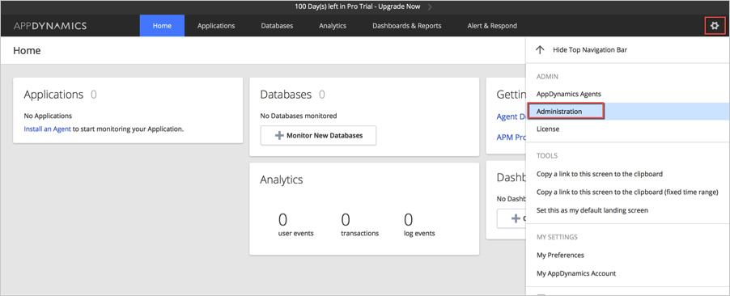
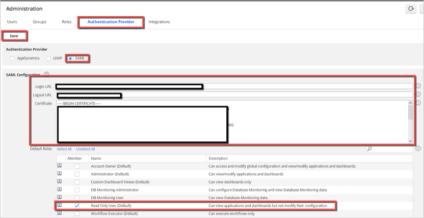
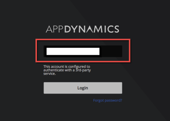

Log in to your AppDynamics account as an administrator.
Click on the settings icon in the top right of the screen, then select Administration from the menu.

Select the Authentication Provider tab and enter the following information (see screen shot at end of step for reference):
Check the SAML box for Authentication Provider.
Login URL: Copy and paste the following:
Sign into the Okta Admin Dashboard to generate this variable.
Logout URL: Copy and paste the following:
Sign into the Okta Admin Dashboard to generate this variable.
Certificate: Copy and paste the following:
Sign into the Okta Admin Dashboard to generate this variable.
Check all the roles you would like to apply SAML login to.
Click Save.

Done!
Notes:
IdP-initiated flows and SP-initiated flows are supported.
Just In Time (JIT) provisioning is not supported.
For SP-initiated flows:
Go to your controller sign in URL and enter your account name. At this point you will be prompted to authenticate using a 3rd party service. Click Login.
